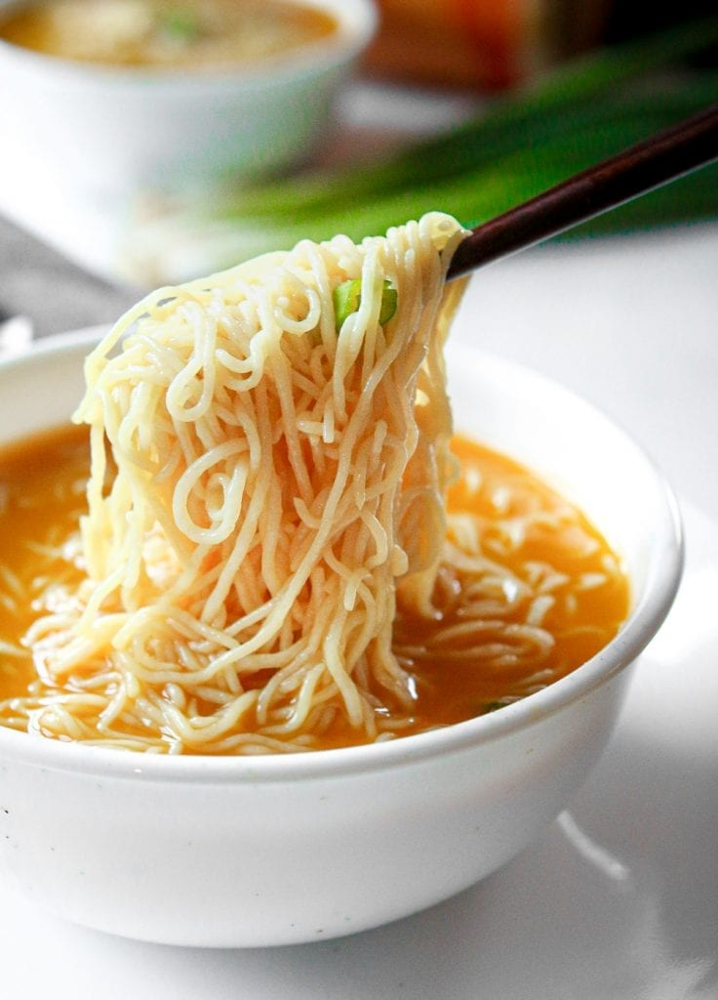

Ramen Recipe
Back to Home

Description:
This is a simple and delicious bowl of ramen noodle soup, perfect for a quick and satisfying meal.
I often eat this for lunch when I am pressed for time because it tastes great and is very easy to make.
The only qualms I have is that it is not highly nutritious.
Ingredients:
- 1 package of instant ramen noodles
- 3 cups of water
- 1 egg (optional)
- 1 green onion, chopped (optional)
- Soy sauce or miso paste (optional)
Steps:
- Boil the water in a pot.
- Add the ramen noodles and cook according to the package instructions.
- Remove from the heat.
- If desired, add the egg and cook until it reaches your preferred level of doneness.
- Stir in the soy sauce or miso paste, if using.
- Garnish with chopped green onions, if desired.
- Serve hot and enjoy!